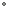
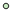

<!doctype html>
<html lang="en">
    <head>
        <meta charset="utf-8">
        <meta http-equiv="X-UA-Compatible" content="IE=edge">
        <meta name="viewport" content="initial-scale=1,user-scalable=no,maximum-scale=1,width=device-width">
        <meta name="mobile-web-app-capable" content="yes">
        <meta name="apple-mobile-web-app-capable" content="yes">
        <link rel="stylesheet" href="css/leaflet.css">
        <link rel="stylesheet" href="css/qgis2web.css"><link rel="stylesheet" href="css/fontawesome-all.min.css">
        <link rel="stylesheet" href="css/leaflet-search.css">
        <style>
        html, body, #map {
            width: 100%;
            height: 100%;
            padding: 0;
            margin: 0;
        }
        </style>
        <title></title>
    </head>
    <body>
        <div id="map">
        </div>
        <script src="js/qgis2web_expressions.js"></script>
        <script src="js/leaflet.js"></script>
        <script src="js/leaflet.rotatedMarker.js"></script>
        <script src="js/leaflet.pattern.js"></script>
        <script src="js/leaflet-hash.js"></script>
        <script src="js/Autolinker.min.js"></script>
        <script src="js/rbush.min.js"></script>
        <script src="js/labelgun.min.js"></script>
        <script src="js/labels.js"></script>
        <script src="js/leaflet-search.js"></script>
        <script src="data/VotosSF_2.js"></script>
        <script src="data/VallasPriorizadasSF_3.js"></script>
        <script>
        var map = L.map('map', {
            zoomControl:true, maxZoom:28, minZoom:1
        }).fitBounds([[3.2165200499999997,-79.27518107034884],[8.484283949999998,-69.71095192965116]]);
        var hash = new L.Hash(map);
        map.attributionControl.setPrefix('<a href="" target="_blank"></a> &middot; <a href="" title="A JS library for interactive maps"></a> &middot; <a href=""></a>');
        var autolinker = new Autolinker({truncate: {length: 30, location: 'smart'}});
        var bounds_group = new L.featureGroup([]);
        function setBounds() {
        }
        map.createPane('pane_CARTOPositron_0');
        map.getPane('pane_CARTOPositron_0').style.zIndex = 400;
        var layer_CARTOPositron_0 = L.tileLayer('https://cartodb-basemaps-a.global.ssl.fastly.net/light_all/{z}/{x}/{y}.png', {
            pane: 'pane_CARTOPositron_0',
            opacity: 1.0,
            attribution: '',
            minZoom: 1,
            maxZoom: 28,
            minNativeZoom: 0,
            maxNativeZoom: 18
        });
        layer_CARTOPositron_0;
        map.addLayer(layer_CARTOPositron_0);
        map.createPane('pane_GoogleTraffic_1');
        map.getPane('pane_GoogleTraffic_1').style.zIndex = 401;
        var layer_GoogleTraffic_1 = L.tileLayer('https://mt1.google.com/vt?lyrs=h@159000000,traffic|seconds_into_week:-1&style=3&x={x}&y={y}&z={z}', {
            pane: 'pane_GoogleTraffic_1',
            opacity: 1.0,
            attribution: '',
            minZoom: 1,
            maxZoom: 28,
            minNativeZoom: 0,
            maxNativeZoom: 18
        });
        layer_GoogleTraffic_1;
        map.addLayer(layer_GoogleTraffic_1);
        function pop_VotosSF_2(feature, layer) {
            var popupContent = '<table>\
                    <tr>\
                        <th scope="row">DEPARTAMENTO</th>\
                        <td>' + (feature.properties['DEPARTAMENTO'] !== null ? autolinker.link(feature.properties['DEPARTAMENTO'].toLocaleString()) : '') + '</td>\
                    </tr>\
                    <tr>\
                        <th scope="row">MUNICIPIO</th>\
                        <td>' + (feature.properties['MUNICIPIO'] !== null ? autolinker.link(feature.properties['MUNICIPIO'].toLocaleString()) : '') + '</td>\
                    </tr>\
                    <tr>\
                        <th scope="row">Nombre Comuna</th>\
                        <td>' + (feature.properties['Nombre Comuna'] !== null ? autolinker.link(feature.properties['Nombre Comuna'].toLocaleString()) : '') + '</td>\
                    </tr>\
                    <tr>\
                        <th scope="row">NOMBRE PUESTO</th>\
                        <td>' + (feature.properties['NOMBRE PUESTO'] !== null ? autolinker.link(feature.properties['NOMBRE PUESTO'].toLocaleString()) : '') + '</td>\
                    </tr>\
                    <tr>\
                        <th scope="row">VOTOS</th>\
                        <td>' + (feature.properties['VOTOS'] !== null ? autolinker.link(feature.properties['VOTOS'].toLocaleString()) : '') + '</td>\
                    </tr>\
                </table>';
            layer.bindPopup(popupContent, {maxHeight: 400});
        }

        function style_VotosSF_2_0(feature) {
            if (feature.properties['VOTOS'] >= 3.000000 && feature.properties['VOTOS'] <= 455.600000 ) {
                return {
                pane: 'pane_VotosSF_2',
                radius: 2.0,
                opacity: 1,
                color: 'rgba(35,35,35,1.0)',
                dashArray: '',
                lineCap: 'butt',
                lineJoin: 'miter',
                weight: 1,
                fill: true,
                fillOpacity: 1,
                fillColor: 'rgba(247,252,245,1.0)',
                interactive: true,
            }
            }
            if (feature.properties['VOTOS'] >= 455.600000 && feature.properties['VOTOS'] <= 1087.400000 ) {
                return {
                pane: 'pane_VotosSF_2',
                radius: 4.0,
                opacity: 1,
                color: 'rgba(35,35,35,1.0)',
                dashArray: '',
                lineCap: 'butt',
                lineJoin: 'miter',
                weight: 1,
                fill: true,
                fillOpacity: 1,
                fillColor: 'rgba(202,234,195,1.0)',
                interactive: true,
            }
            }
            if (feature.properties['VOTOS'] >= 1087.400000 && feature.properties['VOTOS'] <= 1694.400000 ) {
                return {
                pane: 'pane_VotosSF_2',
                radius: 6.0,
                opacity: 1,
                color: 'rgba(35,35,35,1.0)',
                dashArray: '',
                lineCap: 'butt',
                lineJoin: 'miter',
                weight: 1,
                fill: true,
                fillOpacity: 1,
                fillColor: 'rgba(123,200,124,1.0)',
                interactive: true,
            }
            }
            if (feature.properties['VOTOS'] >= 1694.400000 && feature.properties['VOTOS'] <= 2637.600000 ) {
                return {
                pane: 'pane_VotosSF_2',
                radius: 8.0,
                opacity: 1,
                color: 'rgba(35,35,35,1.0)',
                dashArray: '',
                lineCap: 'butt',
                lineJoin: 'miter',
                weight: 1,
                fill: true,
                fillOpacity: 1,
                fillColor: 'rgba(42,146,74,1.0)',
                interactive: true,
            }
            }
            if (feature.properties['VOTOS'] >= 2637.600000 && feature.properties['VOTOS'] <= 39184.000000 ) {
                return {
                pane: 'pane_VotosSF_2',
                radius: 10.0,
                opacity: 1,
                color: 'rgba(35,35,35,1.0)',
                dashArray: '',
                lineCap: 'butt',
                lineJoin: 'miter',
                weight: 1,
                fill: true,
                fillOpacity: 1,
                fillColor: 'rgba(0,68,27,1.0)',
                interactive: true,
            }
            }
        }
        map.createPane('pane_VotosSF_2');
        map.getPane('pane_VotosSF_2').style.zIndex = 402;
        map.getPane('pane_VotosSF_2').style['mix-blend-mode'] = 'normal';
        var layer_VotosSF_2 = new L.geoJson(json_VotosSF_2, {
            attribution: '',
            interactive: true,
            dataVar: 'json_VotosSF_2',
            layerName: 'layer_VotosSF_2',
            pane: 'pane_VotosSF_2',
            onEachFeature: pop_VotosSF_2,
            pointToLayer: function (feature, latlng) {
                var context = {
                    feature: feature,
                    variables: {}
                };
                return L.circleMarker(latlng, style_VotosSF_2_0(feature));
            },
        });
        bounds_group.addLayer(layer_VotosSF_2);
        map.addLayer(layer_VotosSF_2);
        function pop_VallasPriorizadasSF_3(feature, layer) {
        }

        function style_VallasPriorizadasSF_3_0() {
            return {
                pane: 'pane_VallasPriorizadasSF_3',
                opacity: 1,
                color: 'rgba(247,247,247,0.5)',
                dashArray: '',
                lineCap: 'butt',
                lineJoin: 'miter',
                weight: 1.0, 
                fill: true,
                fillOpacity: 1,
                fillColor: 'rgba(255,127,0,0.5)',
                interactive: true,
            }
        }
        map.createPane('pane_VallasPriorizadasSF_3');
        map.getPane('pane_VallasPriorizadasSF_3').style.zIndex = 403;
        map.getPane('pane_VallasPriorizadasSF_3').style['mix-blend-mode'] = 'normal';
        var layer_VallasPriorizadasSF_3 = new L.geoJson(json_VallasPriorizadasSF_3, {
            attribution: '',
            interactive: true,
            dataVar: 'json_VallasPriorizadasSF_3',
            layerName: 'layer_VallasPriorizadasSF_3',
            pane: 'pane_VallasPriorizadasSF_3',
            onEachFeature: pop_VallasPriorizadasSF_3,
            style: style_VallasPriorizadasSF_3_0,
        });
        bounds_group.addLayer(layer_VallasPriorizadasSF_3);
        map.addLayer(layer_VallasPriorizadasSF_3);
        var baseMaps = {};
        L.control.layers(baseMaps,{' Vallas Priorizadas SF': layer_VallasPriorizadasSF_3,'Votos SF<br /><table><tr><td style="text-align: center;"></td><td>3 - 456</td></tr><tr><td style="text-align: center;"></td><td>456 - 1087</td></tr><tr><td style="text-align: center;"></td><td>1087 - 1694</td></tr><tr><td style="text-align: center;"></td><td>1694 - 2638</td></tr><tr><td style="text-align: center;"></td><td>2638 - 39184</td></tr></table>': layer_VotosSF_2,"Google Traffic": layer_GoogleTraffic_1,"CARTO Positron": layer_CARTOPositron_0,}).addTo(map);
        setBounds();
        map.addControl(new L.Control.Search({
            layer: layer_VotosSF_2,
            initial: false,
            hideMarkerOnCollapse: true,
            propertyName: 'NOMBRE PUESTO'}));
        document.getElementsByClassName('search-button')[0].className +=
         ' fa fa-binoculars';
        </script>
    </body>
</html>
